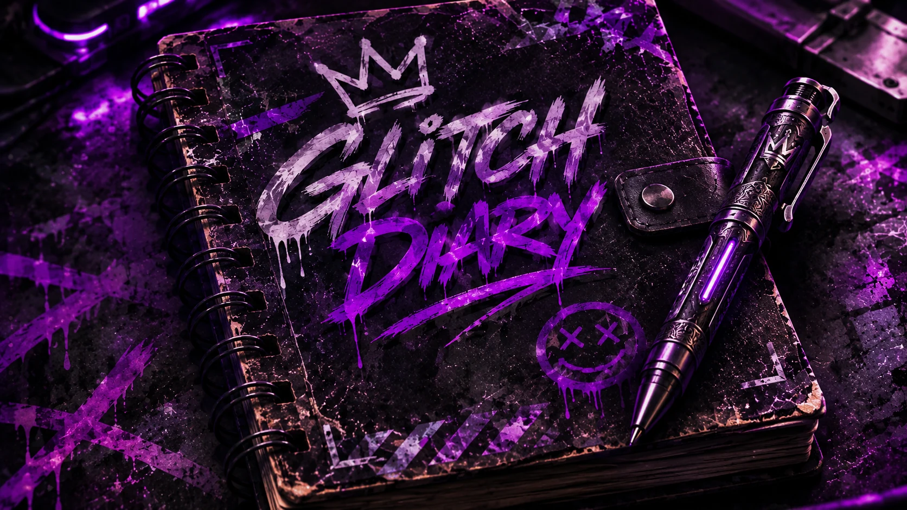
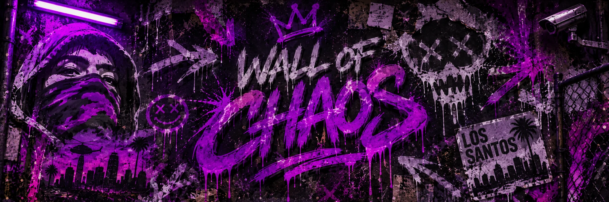
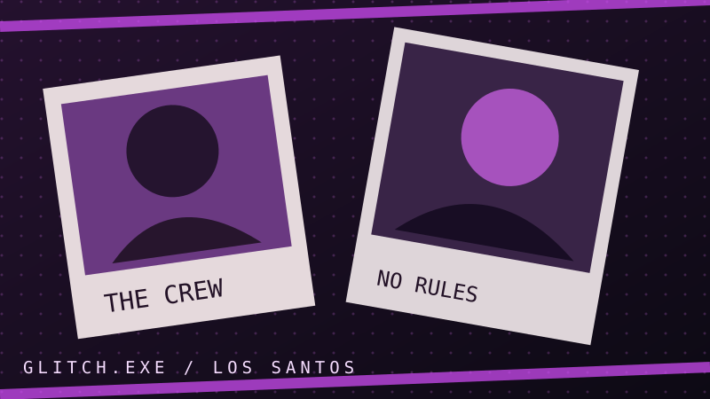
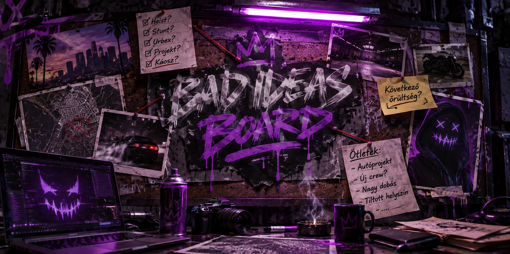

GLITCH DIARY
Rövid történetek, váratlan pillanatok, képek és teljesen indokolatlan gondolatok.
„Ma megpróbáltam normális emberként viselkedni. 11 percig sikerült.”
NAPLÓARCHÍVUM MEGNYITÁSA ↗OLVASD EL AZ AKTÁKAT ↗„Nem tudom, mi lesz ebből, de már elindítottam.”

„Azt mondták, ne menjek be. Ezt én meghívásnak vettem.”
Hét különböző módja annak, hogy rossz ötletből emlékezetes történet legyen.
Rövid történetek, váratlan pillanatok, képek és teljesen indokolatlan gondolatok.

Graffitik, utcai nyomok és képek, amelyekről senki sem tudja, hogyan kerültek oda.
Elegy Retro Custom, Arbiter GT Custom, Jogger és Manchez Scout C — a járművek saját történetei.
Elektronikai projektek, barkácsolás és kísérletek, amelyekről jobb nem kérdezni.
Elhagyatott gyárak, raktárak, alagutak és furcsa felfedezések Los Santos környékén.

A társaság, a belsős poénok és az emberek, akik valamiért még mindig részesei ennek a káosznak.
Ötletgyáros, örök bajkeverő, kütyümániás. A legtöbb tervet ő találja ki. Ez nem feltétlenül jó hír.
A Crew tagjai saját, lenyitható újságpapíros profilokat kapnak.

Őrült ötletek és kihívások. Most egy helyi, kipróbálható szavazás — később közösségi beküldéssel.
ÖTLETARCHÍVUM MEGNYITÁSA ↗DEMO SZAVAZÁS / NINCS SZERVERES MENTÉSNÉZD MEG AZ ÖTLETEKET ↗„A jó ötletek unalmasak. A rosszakból legalább lesz történet.”
VISSZA A KÁOSZ ELEJÉRE ↑